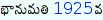
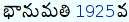
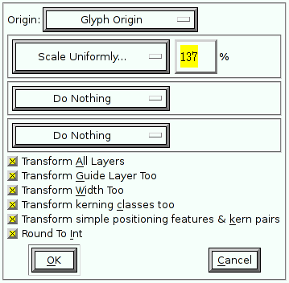

This is a guide to setting up Telugu on Ubuntu Linux. I have also written some
of this information at the Ubuntu
wiki the Swecha
wiki, and Wikipedia.
Correcting Telugu text rendering
The rendering of Telugu text is broken by default if you specify a non-Telugu
locale, such as “en_us” (English, United States), when you install Ubuntu.
Fortunately, this problem is solvable – as the following sections illustrate.
Ubuntu Gutsy Gibbon 7.10
This version of Ubuntu finally fixes the rendering of Telugu text in non-
Telugu locales! Hurray! :-)
However, it uses Vemana2000 (which is rather cartoonish and unreadable in my
opinion) as the default font for rendering Telugu text. To fix this, we can
install the (much more legible) Pothana2000 font by running the following
command:
sudo apt-get install ttf-telugu-fonts
Afterwards, any newly started programs will use Pothana2000 instead of
Vemana2000 to render Telugu text.
As Sunil Mohan suggests, create a file named .fonts.conf inside your home directory and populate it with the following content:
<?xml version="1.0"?><!DOCTYPE fontconfig SYSTEM "fonts.dtd"><fontconfig><alias><family>sans-serif</family><prefer><family>Pothana2000</family></prefer></alias><alias><family>serif</family><prefer><family>Pothana2000</family></prefer></alias><alias><family>monospace</family><prefer><family>Pothana2000</family></prefer></alias></fontconfig>
This is a temporary solution because when you install new fonts or update
existing fonts, all the fonts.cache-1 files will be regenerated. So if you
ever see incorrectly rendered Telugu text again, simply reapply the above
solution.
Ubuntu Breezy Badger 5.10
Install Telugu fonts:
sudo apt-get install ttf-indic-fonts
As Soumyadip Modak suggests, remove the ttf-freefont package:
sudo apt-get remove ttf-freefont
Enlarging Telugu text
Pothana2000 is difficult to read because it appears much smaller than English
text at the same font-size. For example, compare the relative size of the
number “1925” and its surrounding Telugu text in these screenshots:


I often attempted to enlarge Pothana2000 by editing
fontconfig configuration files, but
never succeeded. In this manner, I struggled with tiny, nearly illegible
Telugu text for two years. In fact, I would avoid using Telugu altogether, for
months at a time, after becoming frustrated with this problem.
However, with the help of Rahul
Bhalerao, I
was finally able to enlarge Pothana2000 to a readable size. In fact, I ended
up making Pothana2000 slightly larger than English text at the same font-size
because Telugu text has a greater variation of ascent and
descent than English text.
Without further adieu, here are the instructions for enlarging Pothana2000, or
any font in general:
When a dialog window appears, asking if you have permission to edit the font, choose yes – we have legal permission to edit the font because Pothana2000 is released under the GPL.
Choose Edit -> Select -> Select All from the main menu. All glyphs should be selected now.
Choose Element -> Transformations -> Transform from the main menu. A dialog window will now appear.

Choose Glyph Origin from the first menu.
Choose Scale Uniformly… from the second menu and enter your desired scaling factor (I prefer 137%).
Tick all boxes, as shown in the screenshot above.
Press the OK button.
Choose File -> Generate Fonts… from the main menu and save the file as a TrueType (.ttf) font.
Replace the system’s Pothana2000 font with the newly generated one:
From now on, any new programs that you run should render Telugu text with
the new, enlarged font. However, you may want to restart your X session just
in case some programs do not recognize that we just updated Pothana2000.
Typing in Telugu with SCIM
See this related article for instructions on
setting up Telugu RTS with SCIM, as demonstrated in the video above.